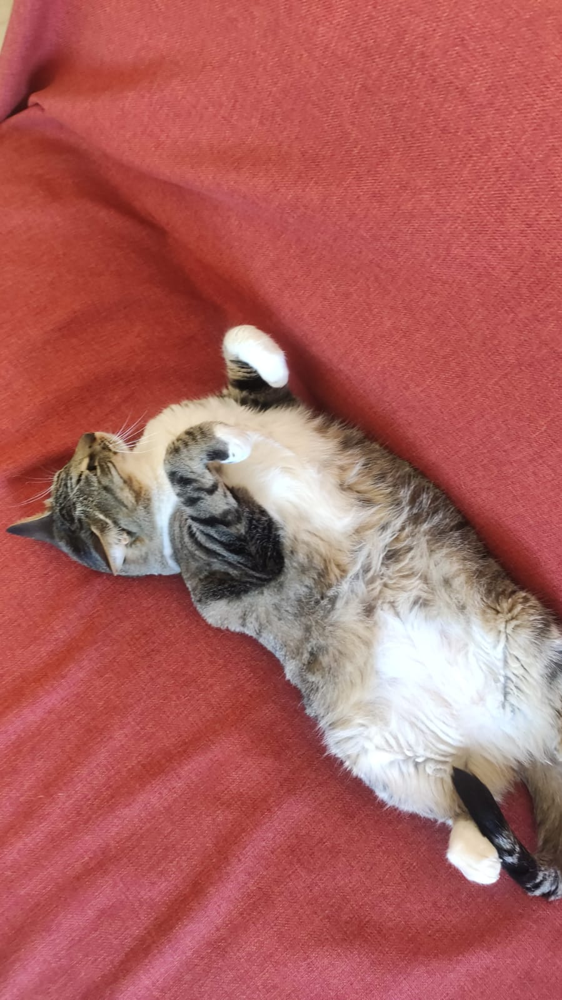

¿De qué se trata esta galería?
Mia es mi gata y, como toda gata, tiene sus lugares de confianza repartidos por toda la casa: el rascador pegado a la pared roja, su camita redonda, el sillón bordó, la manta turquesa, la ventana del balcón y hasta arriba de mi teclado cuando quiero trabajar. Esta galería reúne esos rincones favoritos, con fotos reales tomadas en distintos momentos del día.
La idea es simple: mostrar cómo un mismo animal va eligiendo distintos espacios de la casa según la luz, la temperatura o las ganas de molestar mientras estudio.

Los rincones de la galería




Sobre este proyecto
Este trabajo se realizó para la materia Diseño y Desarrollo Web. Podés leer la propuesta completa, con el objetivo de la galería y las decisiones de diseño, en el archivo README del repositorio.